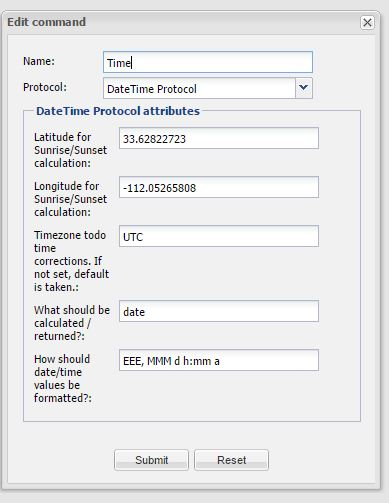

I have been using the DATETIME protocol for about two weeks. Yesterday I notices that it is no longer showing time correctly. I have the timezone set as us/mountain, but the time is +7 which indicates that the timezone is not being properly accounted for.
{kind=link}
|
Just wanted to check and see if there is a fix coming for the time issue. Upon the new release, time zones are seemingly being ignored. Thank you. |
|
If it worked for two weeks why does it not work anymore? Did you change the timezone of the underlying OS? |
|
No, I haven't changed my NAS at all. The issue started right when 2.1 was released. |
|
Use of the timezone was added. You will need to add the timezone attribute to your command. |
|
I have it as: us/mountain in the DateTime command, but it is still +7 hours ahead of where it should be. |
|
Your underlying system clock might be on local time also? |
|
us/mountain is GMT -7. So the fact that DateTime is showing 7 hours fast makes me have to believe it is not using the timezone I have entered. Yes, my NAS is set to local time, but if I was taking 7 hours of the local time, I would be 7 hours behind, not ahead. |
|
Did you try and use UTC as timezone field? Do you have 14 hours then? |
|
No, it is the same either way.  |
|
I am seeing the same issue, I am in Eastern time zone UTC-5 and my clock is 4 hours ahead and everything I have tried has not changed the clock. My windows controller is set for eastern time zone. Has their been a fix for this? |
|
I wanted to post the solution to my time issue. I had to put the time zone in as "America/New_York", and found this website that has the proper names http://www.timezoneconverter.com/cgi-bin/zoneinfo.tzc?s=default&tz=America/New_York Note I only tried it for america and it worked. |